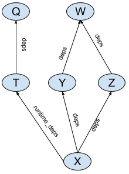
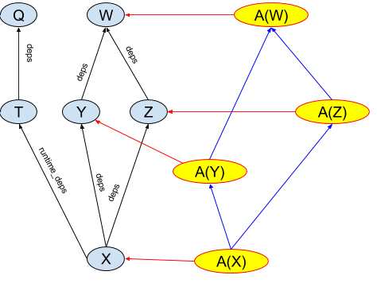

Aspects
Aspects allow augmenting build dependency graphs with additional information and actions. Some typical scenarios when aspects can be useful:
- IDEs that integrate Bazel can use aspects to collect information about the project.
- Code generation tools can leverage aspects to execute on their inputs in “target-agnostic” manner. As an example, BUILD files can specify a hierarchy of protobuf library definitions, and language-specific rules can use aspects to attach actions generating protobuf support code for a particular language.
Aspect basics
Bazel BUILD files provide a description of a project’s source code: what source files are part of the project, what artifacts (targets) should be built from those files, what the dependencies between those files are, etc. Bazel uses this information to perform a build, that is, it figures out the set of actions needed to produce the artifacts (such as running compiler or linker) and executes those actions. Bazel accomplishes this by constructing a dependency graph between targets and visiting this graph to collect those actions.
Consider the following BUILD file:
java_library(name = 'W', ...)
java_library(name = 'Y', deps = [':W'], ...)
java_library(name = 'Z', deps = [':W'], ...)
java_library(name = 'Q', ...)
java_library(name = 'T', deps = [':Q'], ...)
java_library(name = 'X', deps = [':Y',':Z'], runtime_deps = [':T'], ...)
This BUILD file defines a dependency graph shown in the following figure:

Bazel analyzes this dependency graph by calling an implementation function of
the corresponding rule (in this case “java_library”) for every
target in the above example. Rule implementation functions generate actions that
build artifacts, such as .jar files, and pass information, such as locations
and names of those artifacts, to the dependencies of those targets in
providers.
Aspects are similar to rules in that they have an implementation function that generates actions and returns providers. However, their power comes from the way the dependency graph is built for them. An aspect has an implementation and a list of all attributes it propagates along. Consider an aspect A that propagates along attributes named “deps”. This aspect can be applied to a target X, yielding an aspect application node A(X). During its application, aspect A is applied recursively to all targets that X refers to in its “deps” attribute (all attributes in A’s propagation list). Thus a single act of applying aspect A to a target X yields a “shadow graph” of the original dependency graph of targets (see Fig.2).

The only edges that are shadowed are the edges along the attributes in
the propagation set, thus the runtime_deps edge is not shadowed in this
example. An aspect implementation function is then invoked on all nodes in
the shadow graph similar to how rule implementations are invoked on the nodes
of the original graph.
Simple example
This example demonstrates how to recursively print the source files for a
rule and all of its dependencies that have a deps attribute. It shows
an aspect implementation, an aspect definition, and how to invoke the aspect
from the Bazel command line.
def _print_aspect_impl(target, ctx):
# Make sure the rule has a srcs attribute.
if hasattr(ctx.rule.attr, 'srcs'):
# Iterate through the files that make up the sources and
# print their paths.
for src in ctx.rule.attr.srcs.to_list():
for f in src.files.to_list():
print(f.path)
return []
print_aspect = aspect(
implementation = _print_aspect_impl,
attr_aspects = ['deps'],
)
Let’s break the example up into its parts and examine each one individually.
Aspect definition
print_aspect = aspect(
implementation = _print_aspect_impl,
attr_aspects = ['deps'],
)
Aspect definitions are similar to rule definitions, and defined using
the aspect function.
Just like a rule, an aspect has an implementation function which in this case is
_print_aspect_impl.
attr_aspects is a list of rule attributes along which the aspect propagates.
In this case, the aspect will propagate along the deps attribute of the
rules that it is applied to.
Another common argument for attr_aspects is ['*'] which would propagate the
aspect to all attributes of a rule.
Aspect implementation
def _print_aspect_impl(target, ctx):
# Make sure the rule has a srcs attribute.
if hasattr(ctx.rule.attr, 'srcs'):
# Iterate through the files that make up the sources and
# print their paths.
for src in ctx.rule.attr.srcs:
for f in src.files.to_list():
print(f.path)
return []
Aspect implementation functions are similar to the rule implementation functions. They return providers, can generate actions, and take two arguments:
target: the target the aspect is being applied to.ctx:ctxobject that can be used to access attributes and generate outputs and actions.
The implementation function can access the attributes of the target rule via
ctx.rule.attr. It can examine providers that are
provided by the target to which it is applied (via the target argument).
Aspects are required to return a list of providers. In this example, the aspect does not provide anything, so it returns an empty list.
Invoking the aspect using the command line
The simplest way to apply an aspect is from the command line using the
--aspects
argument. Assuming the rule above were defined in a file named print.bzl this:
bazel build //MyExample:example --aspects print.bzl%print_aspect
would apply the print_aspect to the target example and all of the
target rules that are accessible recursively via the deps attribute.
The --aspects flag takes one argument, which is a specification of the aspect
in the format <extension file label>%<aspect top-level name>.
Advanced example
The following example demonstrates using an aspect from a target rule that counts files in targets, potentially filtering them by extension. It shows how to use a provider to return values, how to use parameters to pass an argument into an aspect implementation, and how to invoke an aspect from a rule.
FileCount.bzl file:
FileCountInfo = provider(
fields = {
'count' : 'number of files'
}
)
def _file_count_aspect_impl(target, ctx):
count = 0
# Make sure the rule has a srcs attribute.
if hasattr(ctx.rule.attr, 'srcs'):
# Iterate through the sources counting files
for src in ctx.rule.attr.srcs:
for f in src.files.to_list():
if ctx.attr.extension == '*' or ctx.attr.extension == f.extension:
count = count + 1
# Get the counts from our dependencies.
for dep in ctx.rule.attr.deps:
count = count + dep[FileCountInfo].count
return [FileCountInfo(count = count)]
file_count_aspect = aspect(implementation = _file_count_aspect_impl,
attr_aspects = ['deps'],
attrs = {
'extension' : attr.string(values = ['*', 'h', 'cc']),
}
)
def _file_count_rule_impl(ctx):
for dep in ctx.attr.deps:
print(dep[FileCountInfo].count)
file_count_rule = rule(
implementation = _file_count_rule_impl,
attrs = {
'deps' : attr.label_list(aspects = [file_count_aspect]),
'extension' : attr.string(default = '*'),
},
)
BUILD.bazel file:
load('//file_count.bzl', 'file_count_rule')
cc_library(
name = 'lib',
srcs = [
'lib.h',
'lib.cc',
],
)
cc_binary(
name = 'app',
srcs = [
'app.h',
'app.cc',
'main.cc',
],
deps = ['lib'],
)
file_count_rule(
name = 'file_count',
deps = ['app'],
extension = 'h',
)
Aspect definition
file_count_aspect = aspect(implementation = _file_count_aspect_impl,
attr_aspects = ['deps'],
attrs = {
'extension' : attr.string(values = ['*', 'h', 'cc']),
}
)
In this example, we are again propagating the aspect via the deps attribute.
attrs defines a set of attributes for an aspect. Public aspect attributes
are of type string and are called parameters. Parameters must have avalues
attribute specified on them. In this case we have a parameter called extension
that is allowed to have ‘*’, ‘h’, or ‘cc’ as a value.
Parameter values for the aspect are taken from the string attribute with the same
name of the rule requesting the aspect (see the definition of file_count_rule).
Aspects with parameters cannot be used via the command line because there is no
syntax to define the parameters.
Aspects are also allowed to have private attributes of types label or
label_list. Private label attributes can be used to specify dependencies on
tools or libraries that are needed for actions generated by aspects. There is not
a private attribute defined in this example, but the following code snippet
demonstrates how you could pass in a tool to a aspect:
...
attrs = {
'_protoc' : attr.label(
default = Label('//tools:protoc'),
executable = True,
cfg = "host"
)
}
...
Aspect implementation
FileCountInfo = provider(
fields = {
'count' : 'number of files'
}
)
def _file_count_aspect_impl(target, ctx):
count = 0
# Make sure the rule has a srcs attribute.
if hasattr(ctx.rule.attr, 'srcs'):
# Iterate through the sources counting files
for src in ctx.rule.attr.srcs:
for f in src.files.to_list():
if ctx.attr.extension == '*' or ctx.attr.extension == f.extension:
count = count + 1
# Get the counts from our dependencies.
for dep in ctx.rule.attr.deps:
count = count + dep[FileCountInfo].count
return [FileCountInfo(count = count)]
Just like a rule implementation function, an aspect implementation function returns a struct of providers that are accessible to its dependencies.
In this example, the FileCountInfo is defined as a provider that has one
field count. It is best practice to explicitly define the fields of a
provider using the fields attribute.
The set of providers for an aspect application A(X) is the union of providers that come from the implementation of a rule for target X and from the implementation of aspect A. It is an error if a target and an aspect that is applied to it each provide a provider with the same name. The providers that a rule implementation propagates are created and frozen before aspects are applied and cannot be modified from an aspect.
The parameters and private attributes are passed in the attributes of the
ctx. In this example, we reference the extension parameter to decide
what files to count.
For returning providers, the values of attributes along which
the aspect is propagated (from the attr_aspect list) are replaced with
the results of an application of the aspect to them. For example, if target
X has Y and Z in its deps, ctx.rule.attr.deps for A(X) will be [A(Y), A(Z)].
In this example, ctx.rule.attr.deps are Target objects that are the
results of applying the aspect to the ‘deps’ of the original target to which
the aspect has been applied.
In the example, the aspect accesses the FileCountInfo provider from the
target’s dependencies to accumulate the total transitive number of files.
Invoking the aspect from a rule
def _file_count_rule_impl(ctx):
for dep in ctx.attr.deps:
print(dep[FileCountInfo].count)
file_count_rule = rule(
implementation = _file_count_rule_impl,
attrs = {
'deps' : attr.label_list(aspects = [file_count_aspect]),
'extension' : attr.string(default = '*'),
},
)
The rule implementation demonstrates how to access the FileCountInfo
via the ctx.attr.deps.
The rule definition demonstrates how to define a parameter (extension)
and give it a default value (*). Note that having a default value that
was not one of ‘cc’, ‘h’, or ‘*’ would be an error due to the
restrictions placed on the parameter in the aspect definition.
Invoking an aspect through a target rule
load('//file_count.bzl', 'file_count_rule')
cc_binary(
name = 'app',
...
)
file_count_rule(
name = 'file_count',
deps = ['app'],
extension = 'h',
)
This demonstrates how to pass the extension parameter into the aspect
via the rule. Since the extension parameter has a default value in the
rule implementation, extension would be considered an optional parameter.
When the file_count target is built, our aspect will be evaluated for
itself, and all of the targets accessible recursively via deps.